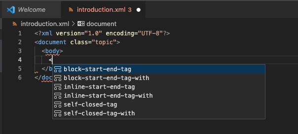
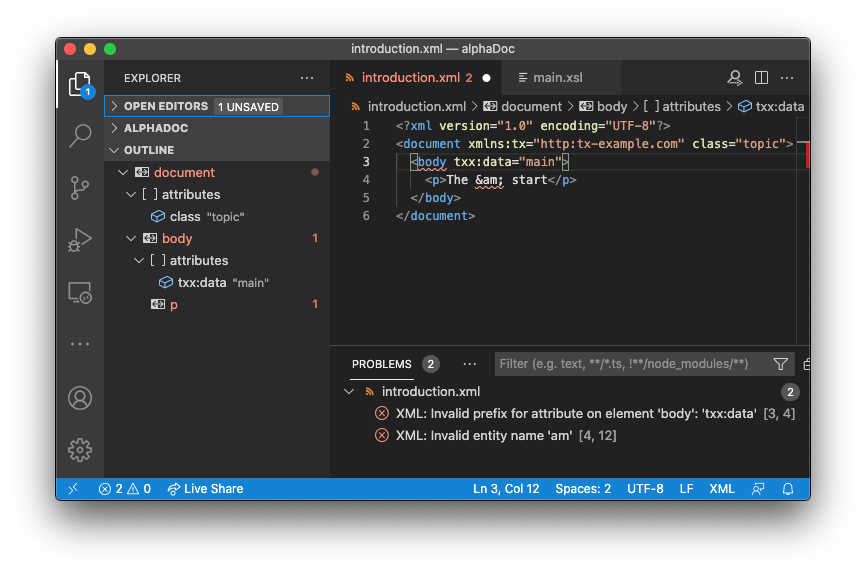

Editing XML
XSLT developers benefit from a set of XML editing features that are also available for any XML file. These general purpose features are described here.
XML Elements
Rename Tag
As you edit the start tag name of an element, the corresponding end tag name is changed at the same time to keep the XML well-nested.Self-Close Element
To convert an element with a start-tag and end-tag to a self-closed element: With the cursor immediately to the
left of the >at the end of the start-tag, type
/. Any element contents and the
end tag will be deleted automatically:
<d><para/>test</para</d>
--> <d><para/></d>
Rename all elements with selected name
Select the element tag name you want to rename by double-clicking it, then press (⇧⌘L). This selects all matching tag names so you're in a multi-cursor edit mode. As you edit the tag name you selected all matching tag names are edited also. When done, press Escape to exit multi-cursor edit.
Auto-Completion
Outside of the auto-complete (intellisense) features for XSLT and XPath, a small set of snippets for general purpose XML elements is accessible from the auto-completion list:

With the cursor in the element start tag where you wish to add the attribute, press ⌃Space
and select attribute to insert the code snippet:
name ="value "Edit the name and then press Tab to edit the value.
Emmet
Emmet can be used to insert XML snippets using a shorthand notation. Emmet should be enabled in user settings. See the Settings section for an example.
Well-Formed XML Checks
As you edit an XML file, the syntax is checked for any well-formedness errors. Any problems tokens are highlighted with a squiggly underline in the editor. To see a description of the problem, hover over a highlighted token. To help navigate between problems, the Problems View (press ⇧⌘M to toggle) shows a list of XML syntax problems. Problems are also highlighted in the Outline View. Selecting a Problem View list item, or Outline View node will navigate you to the corresponding token in the XML editor.
XML Formatting
When you have an XML file open, normal XML formatting features are available. With typical hand-edited XML, it is only indentation that is correct by the formatting. However, if no newline characters are found at the start of the XML file, it is assumed the contents is system generated and newline characters are added for elements that are not mixed content.
The formatter observes the normal rules for whitespace preservation in XML. So xml:space attributes affect
whether indentation is preserved. Whitespace in CDATA sections and 'significant' whitespace in content inferred
to be mixed content is also preserved.
XML attributes on newlines and multi-line attribute value are indented by the XML formatting provider to reflect the level of nesting.
XML Element Selection
The XSLT/XPath extension provides a set of commands for selecting an element. These commands can be invoked from the Command Palette (⇧⌘P).
- Goto XPath - navigate to the element/attribute given by the XPath
- Select current element - ⇧⌘0 extend selection to include containing element's start/end tags
- Select parent element - ⇧⌘9 extend selection to include parent element's start/end tags
- Select first child element - ⇧⌘8 select the first child element's start/end tags
- Select following element - ⇧⌘7 select next sibling's start/end tags
- Select preceding element - select previous sibling's start/end tags